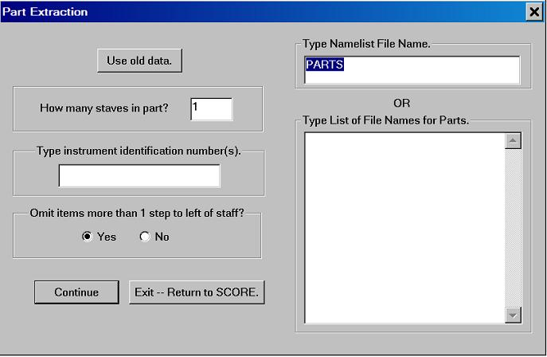

Part Extraction
In order to extract individual performance parts from a chamber music or orchestral score each staff (Code 8) must contain an instrument identification number in P9. Any number may be used for any part but this number must be consistent throughout the score. The Flute part may be number 1 or 20 or what have you, but this number must be found in all staves where the Flute is playing. If there are pages where the Flute does not play, the program will keep track of the numbers of rests which be inserted in the part. More than one number may refer to an instrument. For example, if you have separate lines for Flute 1 and Flute 2, they might be numbered 10 and 11. Then if there is a line where the two flutes play in unison (a2), that staff could be numbered 12. When extracting the 1st Flute part you would enter identification numbers 10 and 12. For the 2nd Flute, enter 11 and 12, etc
.
To start Part Extraction, type "PTS" or click on the Parts box.

The part extractor needs to know what files you want to process. You can either specify every file name in a namelist file, or you can
type in the file names directly. The best procedure is to name all your files in
an orderly alphanumeric series. You must give the first file name (with complete
path) followed by the number of files to be processed.
For example the following reads 31 files.:
\MOZART\CONCERTO01.MUS 31
(Note that if you are processing more than 9 files, the numbering must begin with the digit zero, as above.)
If you have already processed some files and wish to try a different layout with the same input material, you may restart by clicking on the top box above, "Use old data."
If the files have been successfully read in, you will proceed with establishing the page layout. For this refer to the next section.